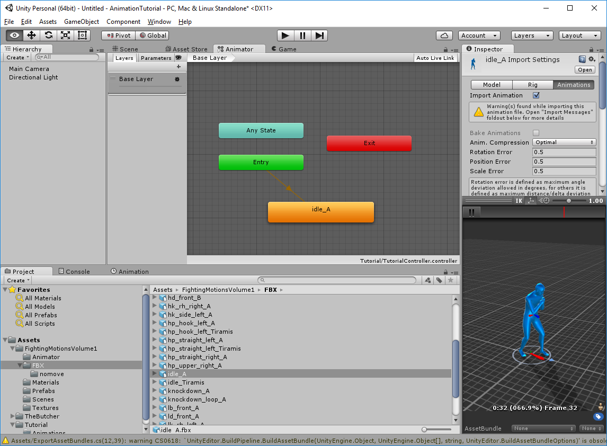
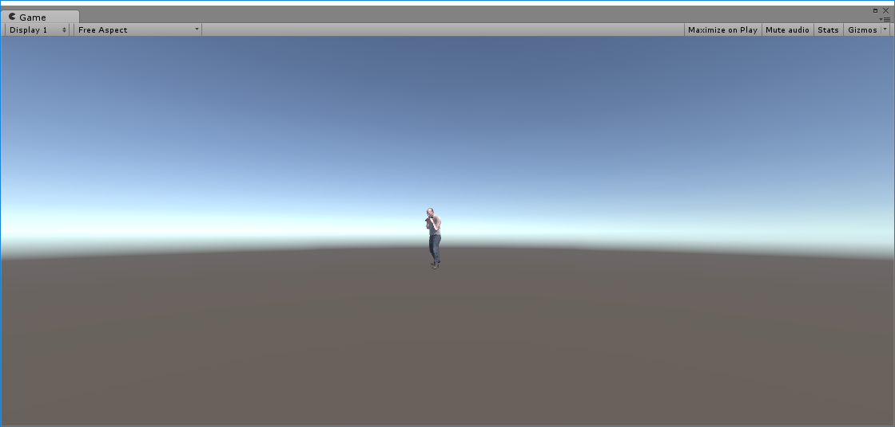
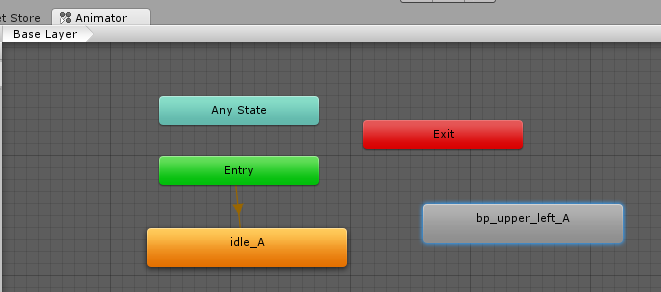
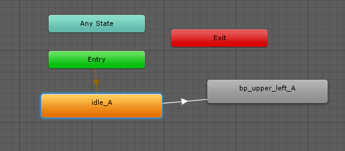

Now we are going to add an Animation clip to the Animator Controller, and set up a few parameters to allow us to control it.
For starting off, we will be adding a state for the character to idle in.
Under the Fighting Motions Volume 1, look for the FBX folder, and the idle_A animation clip. Once you've found it, drag the Idle_A clip up into the Animator Window.

Because there are no other user-defined States, a link is auto-generating from the Entry State. This is now our starting state.
Now press the Unity Play button, and watch the Game screen for The Butcher's new animation, which should be a boxing pose.

Let's give him an attack animation. Look for the animation called "bp_upper_left"A, and drag it into the Animator window.

A new state is created, with the name of the Animation Clip as its name.
Since our default state is idle_A, we want the Butcher to punch as an attack. Let's create a transition from Idle_A to bp_upper_left_A.
Right click on idle_A, and click on Make Transition. Then, move your mouse over to bp_upper_left_A. As you move the mouse, you'll see a line from idle_A extend from it. Once you are over bp_upper_left_A, click on it to make the state connection.

Now, click on the Play button again. You'll notice that the Butcher will go into pose, then perform the punching animation, and stop.
Because we didn't set any conditions on the transition from Idle_A to bp_upper_left_A, the transition occurred immediately after the idle_A finished it's first loop. When bp_upper_left_A completed it's animation sequence, it stopped, because it didn't have any transitions to anywhere else.
Let's make a transition back to Idle. Right click on bp_upper_left_A, and click on Make Transition, then click on Idle_A.
Now when the animation plays, it goes from Idle_A, to bp_upper_left_A, then back to Idle, and continues. Again, since there are no conditions on either transition, the animation loops through both states automatically.
Created with the Personal Edition of HelpNDoc: Benefits of a Help Authoring Tool